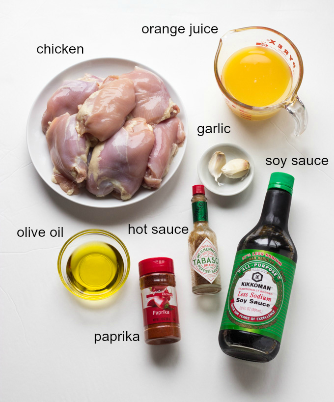

Orange Chicken

Ingredients

-
Chicken:
- 2 tablespoons cornstarch
- 4 egg whites
- 4 boneless chicken thighs, cut into bite-sized pieces
- 1/2 cup orange juice (I used Simply Orange)
- 1 tablespoon soy sauce
- 1 packed tablespoon brown sugar
- 1 tablespoon rice wine vinegar
- 1/4 teaspoon sesame oil
- Dash salt
- Dash crushed red pepper
- 1 clove garlic, pressed
- A little grated or minced ginger
- 1 teaspoon cornstarch
- Vegetable or peanut oil, for frying
Sauce:
Direction
- For the chicken: In a large bowl, whisk together the cornstarch and egg whites with a fork until almost frothy, about 1 minute. Add the chicken to the mixture and allow to sit for 5 to 10 minutes.
- For the sauce: Meanwhile, put the orange juice, soy sauce, sugar, vinegar, sesame oil, salt, crushed red pepper, garlic and ginger in a small nonstick skillet and whisk. Heat until bubbling and starting to thicken, about 5 minutes.
- Whisk together the cornstarch and 1/4 cup water in a small bowl and add 1 to 2 tablespoons of the cornstarch slurry to the sauce. Mix in and thicken for 1 minute.
- Heat about 2 inches of vegetable oil in a heavy-bottomed Dutch oven until a deep-fry thermometer inserted in the oil registers 350 degrees F. Carefully drop the chicken into the oil and move it around, flipping gently, until golden, 3 to 4 minutes. Let the pieces drain on a plate lined with paper towels for 2 to 3 minutes. Then drop them back into the oil for 1 minute to really solidify the coating.
- Toss the chicken in the sauce and serve.